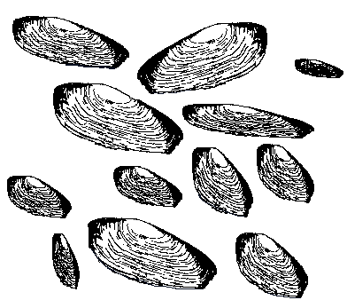

CLAM: Coordinated Librarian &
Automatic Maker

Tutorial and Reference Manual
By Chris Koeritz (koeritz@gruntose.com)
Table of Contents
- Executive Summary
- Preparing Your Computer to Use
CLAM
- Necessary Steps
- CLAM Tutorial
- Caveats
- Basics
- Common Files
- Important Variables
- Variable Assignment
- Optional Variables
- Writing Your Own Rules
- Conclusion
- CLAM Reference
- Language Independent
Variables
- Language Independent
Rules
- Language Independent
Targets
- Language Independent
Files
- C++ Specific Variables
- Directory Structure
Variables
- Compiler Dependent Flags
- Microsoft Visual C++ Only
- Support for
Compilation
Extensions
- C++ Specific Rules
- C++ Specific Targets
- C++ Specific Files
- Example CLAM Makefiles
- CLAM Hints and Troubleshooting
- Acknowledgements
Executive Summary
The CLAM system is a set of macros and rules
for the GNU make program
that
simplifies the creation of executable programs and code
libraries.
Most makefiles that use the CLAM system are ten lines long or
less.
Makefiles are stated in terms of a set of special variable names that
CLAM
interprets in order to issue the correct sequence of compilation
directives.
This document presents a tutorial on the variable names and simple
rules
that need to be used with CLAM. Several example makefiles and the
full
reference manual for CLAM are also included.
CLAM is part of the HOOPLE libraries (http://hoople.org/)
and can be
downloaded from there or through a sourceforge mirror site.
In the remainder of the document, we will often
refer to CLAM as just "clam".
Preparing Your Computer to Use
CLAM
Necessary Steps:
- Setting environment variables for clam:
- FEISTY_MEOW_APEX:
- **REVISE** out of date... This variable has been needed
since clam became
part of the YETIcode project (at http://yeticode.org).
- The default location for clam is under the FEISTY_MEOW_APEX
in a
folder named clam, although the version of clam shipped with the
HOOPLE
code (http://hoople.org) actually lives under the root of the
hoople
hierarchy.
- If the yeti root directory is in $HOME/yeti
already, then the
default for FEISTY_MEOW_APEX will work and it doesn't need to be
declared.
- Setting the variable:
- On Unix (with the bash shell): export
MAKEFLAGS="-I $HOME/yeti/clam"
- On win32: set
MAKEFLAGS="-I c:/yeti/clam" (or set this in the
System
control panel, under the advanced tab, in environment variables)
- Note that the use of
forward slashes is mandatory in the clam directory in MAKEFLAGS.
- MAKEFLAGS:
- This variable is required to be set in the
environment before using clam with gnu-make. It tells make
where
to find the clam definitions and scripts.
- Setting the variable:
- On Unix (assuming bash as shell): export
MAKEFLAGS="-I $FEISTY_MEOW_APEX/clam"
- On win32: set
MAKEFLAGS="-I %FEISTY_MEOW_APEX%/clam"
- This variable also requires forward slashes
instead of
backslashes.
- Required Tools:
- The compiler itself:
- If you are running GNU/Linux (or almost any other
Posix-compliant operating system), then the GNU C/C++ compiler
suite is pretty much all that's needed.
- The
GNU C/C++ compiler (included in the MinGW
toolkit) should be all that's needed for
compilation,
but the Microsoft Visual Studio 6.0-8.0 compilers can be used if
available. Compatibility is only guaranteed for vc8
however.
- Win32 Unix Tools:
- If you are running a win32-based product
(windows NT,
windows
2000,
windows xp, etc) then a few additional tools are required...
- The recommended GNU utilities are available for
win32 in the
MingW MSYS
package (http://www.mingw.org/).
- Note that you will need to add the binaries directory from
MSYS to
your path. The PATH variable can be accessed under MS-NT
type OSes through the
"control panel | system | advanced | environment variables" menu
trail. If you
plan to use msys outside of clam, then ensure that
the MSYS bin directory is prior to the
windows system directory in your path; this causes the Unix "find"
command to be used instead of the Windows version.
- Alternatively, a similar set of GNU utilities is
available
in the Cygwin package, although
these tools are no longer recommended and are, in
fact, actively deprecated.
- makedep and version_stamper tools:
- The hoople/bin directory in the archive has
pre-built
versions of tools used by clam during a build.
- If you would rather rebuild them from source, then
running
the script "bin/bootstrap_build.sh" will
recreate all of these internal tools.
- Third Party Tools Used By or Supported Within clam:
- wx widgets:
- home page: http://www.wxwidgets.org/
- As far as the clam team is concerned, this is the
premier
portable (and open source) library for graphical user interfaces.
- OpenSSL:
- home page: http://www.openssl.org/
- This is the team's most favorite library for SSL
(Secure
Sockets Layer) and general encryption needs.
- cURL:
- home page: http://curl.haxx.se/
- The curl library rocks(!) and provides a very
powerful set of
tools for programmatically interacting with live web pages.
- Other clam Preconditions:
- Linux platforms:
- The standard source code repository is a directory
called
"hoople"
in the user's home directory. If you decompress the hoople
library archive in your home directory, you should be all set to
perform a build.
- See the HOOPLE website for more details about
downloading that codebase (http://hoople.org).
- Win32 platforms:
- The standard repository for source code is a substituted
drive l:, which is where all the other hierarchies start.
This
drive can be mapped to any folder desired using the "subst"
command
(for example, "subst l: c:\build_dir").
All
objects and final products will be generated to the l: drive.
- Using MS Visual Studio as the Compiler:
- VS80COMNTOOLS/VS90COMNTOOLS/VS100COMNTOOLS variable:
- This variable should be automatically created by
Visual Studio upon installation. If it isn't, then
Microsoft has
a bug or you need to restart your current prompt or your
computer.
- The paths that clam uses to find compiler binaries
is calculated based on this variable.
- Older versions of visual studio are currently
unsupported because Microsoft constantly rearranges their
folders and
tools in a non-maintainable way.
- Several other environment variables are required
by Visual
Studio. They can be set up for your current command prompt
by
running "vcvars32.bat" or "vsvars32.bat" (found under
the
compiler's common directory, which varies depending on the
version of
visual studio).
CLAM Tutorial
This section provides an overview of
how clam
works and how you can make it work for you. It is quite brief,
but
should suffice for most common cases of makefiles. For more
detailed
usage, consult the CLAM Reference section of this document.
Caveats
- Most of the Unix tools employed in the make process are
case-sensitive.
This means that they will probably not find any of the clam support if
the files have been changed to upper-case names. It also means
that
all code files must match their descriptions in makefiles, letter for
letter.
And any batch files or executables invoked also need to be in
lower-case
as clam expects them to be.
- A corollary case requirement is that the makefile must
be named
either
"makefile" or "Makefile". These are the Unix standard names and
GNU make
looks for these by default. If you are willing to type "make -f
makefile_name",
then you can run any makefile. However, the build-ready
makefiles
should be named according to the standard, since the build process
will
look for these automatically.
Basics
The C++ Library
Automatic Maker system (or CLAM) is defined as a set of
variable
(or macro) definitions. These variable definitions are
manipulated in
order to compile and link programs. By setting the variables'
values
appropriately, specific products can be generated from the target rules
defined
in clam. Both variables and rules are extensible. The
general
procedure for building a clam-based Makefile has four user-defined
steps:
- loading the default variables for clam,
- redefining the default variables where necessary,
- loading the default rule set for clam,
- defining rules that are local to the user's Makefile.
Step 4 can usually be omitted unless the project creates
components
whose types are not supported by clam.
clam is structured as a directory hierarchy
where the root of clam
supports
the most general makefile activities. Activities such as
recursing
into subdirectories and providing support for cleaning up after a make
are
provided at this level. In the remainder of the document, we
will
designate this location with a "$" character to clarify what part of
the clam hierarchy we are describing.
The root clam
support files are mostly language independent, since they are used by
all
varieties of language dependent derived versions of clam. These
files
are generally not of concern unless one is designing a new derived
version
of clam for a language not yet supported.
The subdirectories off of the clam root
provide
"derived" makefile services, such as C++ or Ada compilation. Each
derived clam service implements at least two files to link into the
rest of the
clam system: a variables file and a rules file. The variables
file defines
the options for the derived make process; by changing the values of
these,
different types of targets can be created. The rules file
implements
creation of the targets relevant to the programming language being
supported.
It may be worth noting that clam can be used to
drive
any kind of programmatic process--not just compilation. Currently
though,
program compilation is the primary goal.
Common Files
The top-level file called
"$/variables.def"
contains
definitions and descriptions of the variables used throughout the clam
system. For a non-derived type of make (using only base clam
support),
this file should be included near the start of the user's
Makefile.
The rules file (stored in "$/rules.def") should be included after the
user
has modified the appropriate variables that will dictate how the make
is
performed.
This scheme of including variables at the
top and then rules at the bottom of the user's makefile is employed in
all clam makefiles. For example, makefiles for C++ compilation
are structured the
same way. The user's C++ makefile includes the C++ variables
(stored
in a subdirectory called "$/cpp" under the clam root) at the top of the
makefile and then includes the C++ rules at the bottom.
An example
of a C++ makefile is shown below:
include cpp/variables.def
PROJECT = basis
TYPE = library
SOURCE = chaos.cpp checkup.cpp earth_time.cpp guards.cpp istring.cpp \
log_base.cpp mutex.cpp occurrence.cpp outcome.cpp
outcome_table.cpp \
packable.cpp portable.cpp runtime_history.cpp
system_outcomes.cpp \
utility.cpp version_checker.cpp version_record.cpp
TARGETS = basis.lib
include cpp/rules.def
The interior of the makefile overrides the TYPE, SOURCE
and TARGETS variables for C++ compilation to specify what is to be
built
(basis.lib) and what it consists of (the CPP files mentioned in
SOURCE).
The PROJECT variable being overridden is actually defined in the
$/variables.def;
a project name is a required feature of all clam makefiles.
Important Variables
The clam root directory is pointed to by an internal variable called
"CLAM_DIR",
defined in $/variables.def. This variable is used by the clam
system
to find extra files that might be needed by derived makefile
support.
It is important to change this to the appropriate value when you are
using the system in a different location. The CLAM_DIR variable
can either
be directly edited in $/variables.def, or it can be overridden in the
environment
of the shell running the make, or it can be passed on the command line
to
make.
For C++ compilation, the above example
makefile
(for basis.lib) contains examples for most of the required
elements. Additional elements
will be discussed in the examples section or can be found in the
reference.
The absolutely required variables for C++ are PROJECT, TYPE, SOURCE and
TARGETS.
PROJECT is a variable that
provides the
name
of the project being compiled. This should be a word that can
also
be used as a directory name and partial component of filenames.
Thus,
spaces and other unusual punctuation characters are discouraged.
All of the project's temporary directories will be created based on
this
variable. This project name should be unique across a full build;
otherwise files generated by compiling identical project names will be
jumbled together.
TYPE is a variable that describes
the kind
of project that is being compiled. This is necessary because it
controls
some aspects of the compilation, such as where the compilation products
are
generated. All files generated by compilation are stored in the
repository
directory (by default, either "~/hoople" in Linux or "l:\" in
win32). There are three TYPEs supported so far:
- library: indicates that the project will primarily be
creating
static
or
dynamic libraries.
- application: indicates that the project will create
executables.
- test: indicates that the project constructs test
programs.
Projects of the "library" type will
be given
an include directory named after the project, such as
"~/hoople/include/basis".
The include directory is created as a copy of the headers in the
project's
directory . Library projects will also have their final products
copied
to the lib or dll subdirectories of the build directory being created.
Projects that are of type "application" will
have their executables
copied to the executable directory in the repository (such as
"~/hoople/exe").
The "test" type of project
will be promoted to a subdirectory named after the PROJECT that resides
under the test hierarchy in the repository (such as
"~/hoople/tests/turbodog").
SOURCE is a list of files that
are to be
compiled
in order to create the final products of the project. These can
be
C++ source files (*.cpp), MS-Win32 resource files (*.rc) and other
types
of source files. The list of objects to create will be determined
by transforming the list of SOURCE files (such as by turning a file
called
"fud.cpp" into an object called "fud.obj").
TARGETS is a list of the products
that are
to be created by compilation and linking. The suffix of a target
is a well established extension, such as ".lib", ".exe"
or ".dll" for MS-Win32 compilation products.
Variable Assignment Policies
The assignment of variable values is mostly straightforward, but it
might
be valuable to provide a refresher. In GNU make, a variable
(a.k.a.
macro) can be assigned using the following syntax:
This sets the variable named FRED to the value of "a
b c". The variable is referred to as $(FRED) when it is being
used,
although its name is just FRED.
This syntax is fine when the variable is to be
defined only once.
In many cases though, a variable is already defined and needs to be
added
to instead of redefined. Using the standard equals (=) operator
would
wipe out the previous definition, so a special assignment
is provided:
This is quite similar to the C syntax on integers. It
means that
FRED will be given a value equal to its old value plus the new
contents.
In our example, FRED would be equal to "a b c d e f". Note that
one cannot say:
FRED = $(FRED) d e f
(BAD!)
This is not allowed in GNU make because it includes a macro's own value
in its definition. This causes a badly formed recursive
definition
of the variable; a variable dereferencing operation (such
as $(FRED)) causes the variable's current value to
be resolved, which in turn dereferences any other variables in the
definition.
Thus, the reference to $(FRED) causes infinite recursion when
included
in the definition of FRED.
In the case of variables that must
be defined by the user's makefile, the standard assignment operator
(via the = character) can
be used. This includes the PROJECT, TYPE, SOURCE, and TARGETS
variables.
Also, any other variables that are set only by the user's makefile can
use simple assignment. This category includes LOCAL_LIBS_USED,
LIBS_USED and others of similar nature.
But several variables are defined partially
by clam, then added to within the user's makefile, and then possibly
extended
after the user's makefile is processed (by the clam rules file).
These variables cannot use
standard assignment and must instead use the incremental assignment
(+=)
operator. Variables included in this category are DEFINITIONS,
LOAD_FLAG_PREFIX,
CLEANUPS, and many others.
If you are unsure about the type of variable
you are defining, then the incremental assignment (+=) operator is
preferred
to avoid trashing the variable's previous values.
Note that when variables are "exported", then any make in a subshell
will
inherit the parent shell's value. This can induce some weird
behavior
for variables that are incrementally constructed with the +=
operator.
If this seems to be happening, try using the simple assignment operator
for
that variable in the sub-makefile, if this is allowed. In general
though,
variables are not exported unless they MUST be seen by shell scripts
and
this does not occur overly frequently.
Optional Variables
There are several miscellaneous
variables that
are useful, either within one's makefiles or when passed to GNU make on
the command
line. These are described below.
LOCAL_LIBS_USED is a list of
library names
that are to be linked in with the library or executable being
created.
These are specially formatted names; they are just the prefix part of
the
full library name. For example, if you're building a release
executable
and want to link in a data structures library "i_adt.lib" (win32) or
"libi_adt.a" (Linux), you can specify:
LOCAL_LIBS_USED = i_adt
The appropriate prefix and suffix will be attached.
EXTRA_COPIES is a list of files
that should be copied to a project's output folder when it is done
being compiled. These should be files that are not already
copied as the main products, such as extra data or configuration files
that belong with an application.
EXTRA_VERSIONS is a list of
version files
that
also need to be updated to the main build version during a
compilation.
These are usually needed if a project compiles several executable
files,
and each one performs version checking. (By default, any project
containing a file called "version.ini" will get a version stamp from
the
main build version.)
Writing Your Own Rules
One might need to write new rules
for
processing
file types that are not directly supported by clam. There are a
number
of features provided for writing rules, but there are also some
requirements
placed on the rules.
All rules in makefiles need to be prefaced
with one of the provided "launcher" macros. These are used to
ensure
that the rules can be properly executed on different platforms;
Windoze95
was especially hard to implement for until these macros were developed
(due to what appear to be basic defects in the command line
support).
All preaching aside, here are the macros:
- HIDER: Executes a command but hides the
invocation. Any
output is
still sent to standard out. If a verbose
build is being done, then all of the invocations become visible again.
- HIDESH: Executes a shell script but hides the
invocation.
Similar to HIDER but supports scripts specifically.
Here are some examples of using the macros properly.
Note that
the
command itself must be contained in single quotes:
$(HIDER) $(MIDL) crumpet_server.idl
MIDL is also a provided macro; it executes the
Microsoft
IDL compiler.
$(HIDESH) $(CLAM_DIR)/postconditions.sh
This runs a shell script that handles the end
portion of a
make.
Conclusion
This tutorial is intended to raise
awareness
of
basic usage. Hopefully the reader will now be able to
create
simple makefiles that use . For more aggressive compilation
requirements,
the reference section may be needed; it describes every variable and
rule
used in the system. However, it is most likely the case
that
your unsupported compilation needs will also be required by others in
the
future, and it is hoped that you will contribute them to the
main-line support. Currently, the appropriate way to do
this is just
to
send the makefile code to the library
administrator, who will include them
in the next version of .
CLAM Reference
Language Independent Variables
The language independent variables
are stored
in the file "$/variables.def". They define the overall structure
of a make and can usually be overridden to customize how the make is
performed.
BUILD_BEFORE
This is a list of projects that need
to be
created
before this project can be created. The items in the list are
interpreted
as directories that contain a makefile to be run. For example, if
an item in BUILD_BEFORE is listed as ?fred?, then the target
"fred.make"
will be executed. That target changes to the directory 'fred'
before
running the makefile there. The project in the specified
directory
is created using make if needed (as determined by that directory's
Makefile).
The projects in BUILD_BEFORE are made immediately after the
FIRST_TARGETS
are made.
ACTUAL_TARGETS, ACTUAL_FIRST_TARGETS, ACTUAL_LAST_TARGETS
See below for TARGETS, FIRST_TARGETS and
LAST_TARGETS.
BUILD_AFTER
A list of directory names that
should be
recursed
into after this project finishes. Each listed directory will have
make
started on any makefile found.
BUILD_BEFORE
A list of directory names that
should be
recursed into before this project
starts. Each directory listed will have make started on any
makefile found.
MAKEFILE_NAME
A variable that specifies the name
of the
makefile
for all sub-makes. It works with BUILD_BEFORE and
BUILD_AFTER and allows the name of the makefile in a
subdirectory to be changed to something other than 'makefile'.
This
supports different types of builds which are controlled by different
makefile
names.
PARAMETER_FILE
A file name that is
usually found at the root of the repository. The name is
often "build.ini", but any name can be used as the parameter file.
This file is an extension of the variable set included in
$/variables.def
and can be used to provide compilation paramters without resorting to
the
command line. This file is associated with a particular build
rather
than the support, so different releases will have different build
parameter
files. On systems supporting version information, the build's
version
number is stored here also.
CATCHER
A sub-program launcher like HIDESH
but this will trap errors it sees and play the build error
CLAM_ERROR_SOUND.
CLAM_BINARY_DIR
This is a folder where the helper
binaries for the CLAM makefile system are located.
CLAM_DIR
This variable points at the location
where the definitions and helper scripts are located. The
default is
"~/yeti/clam",
but this can be overridden for local installations of .
CLAM_ERROR_SOUND
This is a list of sound files
that should be played when a make stops with an error. It serves
as
an audible warning that something bad happened.
CLAM_FINISH_SOUND
This is a list of sound files
that should be played when the make has concluded
successfully. It should play when the outer-most make
has seen all targets created as intended.
CLAM_TMP
Specifies the location for temporary
files generated during a make. The default value usually works
fine.
This directory will be created if it does not already exist.
CLEANUPS
This is a list of files to be
removed by the
make
clean command. They are possibly acquired from the TARGETS
defined
in the user's Makefile, or by language dependent rules for
cleaning.
Additional files can be added to this list by the user's makefile also.
DIRTY_FILE
This variable points at a file that
signifies
that some targets have been remade. It is not used at the base
level
of clam, but language-specific versions might do something special if
targets
were remade (such as put them in a build repository).
FAILURE_FILE
This file is used as a flag that
indicates
when
a make has failed. The particular file used depends on the
project
name for this makefile. It is cleared at both the beginning and
end
of a make.
FIRST_TARGETS
The FIRST_TARGETS are made before
any
libraries
are created and before any executables are compiled. There must
be
a rule for making every entry in this list, either through implicit
rules
or explicit ones provided by the user's makefile.
FLAG_FILES
This is a list of all the files
that are used for compilation flags. They are whacked at the
beginning
and end of a make.
HIDER
This macro is used throughout
to hide the
commands that are being sent to the operating system. It can be
disabled to allow a verbose make (see the NOISY macro).
HIDESH
Just like HIDER, but this macro is
specifically
for launching shell scripts. Some versions of GNU make (like
Cygwin's)
have problems running scripts which don't arise when running executable
files.
Those problems led to the creation of the HIDESH macro for those
specific
cases. This is not an issue for Unix systems.
LAST_TARGETS
The LAST_TARGETS are made after all
of the
other
standard targets are made. Their must be a rule for making every
entry in this list, either through implicit rules or explicit ones
provided
by the user's makefile.
NOISY
This variable can be used to cause a
verbose
make.
If the variable is non-empty, then all commands will be echoed to
standard
output. Otherwise, the default is to hide the commands that are
issued
and just show the output of running those commands.
OP_SYSTEM
This is a flag that defines the
operating
system
name. This flag is sometimes used to choose the appropriate tools
per platform or to conditionally compile code for system
dependent interfaces. The available possibilities so far are
UNIX,
OS2, SYSV (System V Unix), DOS, and WIN32. Only UNIX and WIN32
are
currently very functional.
OTHER_CLEANS
These are targets to execute before
performing
the main clean up during "make clean". These might be targets
that
contain shell commands to execute as part of clean up or they could
contain
the "clean_subdirs" command (defined below).
PROJECT
This is a variable that provides the
name of
the
project being compiled. This should be a word that can also be
used
as a directory name and as a partial component of filenames.
Thus, spaces
and other unusual punctuation characters are discouraged. All of
the project's temporary directories will be created based on this
variable.
FEISTY_MEOW_APEX
Specifies the root directory
for compilation or other building activities. The
repository
is also where source code and final products of compilation reside,
unless
the default is over-ridden (see TARGETS_DIR).
SH & SHELL
These variables both point at a
shell program
that is
used for starting commands. SHELL is defined by GNU make, whereas
SH is defined by .
SUB_FLAG_FILES
This is a list of the compilation
flag files
which
should be destroyed only at the end of a make. They are used for
communication
with submakefiles--makefiles that were invoked by "this" makefile.
SUBMAKE_FLAG
This points to a file whose presence
indicates
that
a "submake" performed some actions. The flag can be interpreted
by
some language-specific versions of as a reason to set a flag
using
the
DIRTY_FILE.
TARGETS
These are the products to be created
by .
Each item listed in TARGETS should have a rule that knows how to create
that type of file. The language independent system provides very
few suffix based rules. TARGETS is filled in by the user in
their file, but it is not used directly by the
system.
Instead,
a generated variable called ACTUAL_TARGETS is used.
TARGETS_DIR
This folder is where all generated
files are
to
be stored. It is usually identical to FEISTY_MEOW_APEX but can be
overridden
when the targets should be stored elsewhere.
Version components: major, minor, revision, build
These four variables specify the
version of
this
particular build. They are usually stored in the
PARAMETER_FILE.
The major and minor versions are the traditional 2.3, 4.0, etc
style
of release numbers. The revision number is often used to sequence
the
builds of that particular release, such that build 3.5.127 is the 127th
build
of the 3.5 release.
A version-tagged file (such as an executable or
dynamic
library) with any one of the major, minor or revision numbers differing
from
an installed build is incompatible with the installed build. An
executable
file or dynamic library will not be allowed to load other dynamic
libraries
where these numbers differ.
The last version component is misleadingly called
"build";
this number specifies the service pack level for a file. Files
whose
versions only differ in the last "build" component are intended to be
compatible
with each other. The understanding is that if only that number
differs,
then the external interface to the file has not changed, although the
interior
implementation may have.
Language Independent
Rules
The file "$/rules.def" uses the
composite
macros
defined in "$/variables.def" together with a set of make rules to
perform
actions during compilation. The rules file should be included in
the user's Makefile after the compilation variables have been
initialized
for the project being compiled. The user's own targets should be
placed after the directive that includes "$/rules.def".
%.halt
These targets cause to exit,
usually to
avoid
something that it considers catastrophic. An example of this
would
be when finds an inappropriate entry in the list of objects to
create;
allowing a "make clean" on this makefile will delete files that are
probably
not intended. Hence, when finds this kind of usage, it will
stop the make and issue a complaint.
%.make
Used to compile a makefile in a
subdirectory
named
"%". This rule is employed by the BUILD_BEFORE macro, but can be
used in the user's makefile targets also.
Language Independent
Targets
The following targets are defined by
"$/rules.def".
all
This is a standard target that is
executed
when
no particular target is specified at the make command line. It is
an umbrella target that invokes all of the other targets required to
perform
a make. The order in which the major targets are created is:
- FIRST_TARGETS
- TARGETS
- LAST_TARGETS
clean
This causes all of the files in
CLEANUPS to be
removed and also executes all of the targets in OTHER_CLEANS. The
language dependent system can override some of this behavior or it can
just add more files to the list of CLEANUPS.
clean_subdirs
This is similar to "make_subdirs" in
that it
descends
into the subdirectories in no particular order, but it runs "make
clean"
in each of them. This allows a directory hierarchy of projects to
be cleaned with one command.
finish
The "finish" target represents the
completion
of a make, whether successful or not. It reports the time and
date
(and logs them).
rm_links
This target causes all link files in
the
current
directory to be deleted. This is only applicable on a Unix
operating
system.
make_subdirs
This target allows a makefile to
specify that
all of the subdirectories under the current directory should be scanned
for makefiles and that those makefiles should be executed. If a
makefile
does not exist, it is skipped. Note that the subdirectories are
descended
into in no particular order; the order depends on how the operating
system
decides to list the directories. If the order of make is
important,
use BUILD_BEFORE instead.
start
The "start" target represents the
beginning of
the make. It reports the time and date (and logs them).
Language Independent
Files
$(PARAMETER_FILE)
This is a special
file that has at least two purposes in . It is the source of
the
version number that will be stamped on all the appropriate DLLs and
EXEs
created during a build. It is also a place where build-wide
compilation
directives can be included so that they do not have to be passed on the
command
line. For C++ compilation, this is usually an INI file
stored in the
FEISTY_MEOW_APEX under the build folder.
Here is a sample parameter file:
#\
[version]
major=14
minor=3
revision=140
build=0
DEBUG=t
OPTIMIZE=t
Note the bizarre comment at the top of the makefile; this is
used to
hide
the "[version]" section marker. The comment is required because
the
build parameter file is pulled directly into the makefile code to set
the
variables after the version stamp. Without a comment in front of
the section, a syntax error would result. The "[version]" section
marker is required because this file is also sometimes treated as a
win32 INI file
in order to read the version stamp.
The build version is stored in the first four
entries. Our interpretation of the stamp is standard for "major"
and "minor". We treat the "revision" as a build revision number;
within a release, there will be numerous revisions--one for each new
build
that is performed. We then treat the "build" entry as a patch
level
within that particular build. When we perform our version
checking,
only the first three entries are compared; the patch level in "build"
is
considered irrelevant.
This example also specifies that the build
should be a debug style (rather than release) build and that it should
be optimizer. We can also see that
the flags for bounds checker instrumentation and true time
analysis support are commented out.
badness_catcher.sh
Runs the command line passed
in as a sub-shell and looks for error conditions. If an error
occurred,
the build is stopped and the CLAM_ERROR_SOUND is played.
datestamp.sh
Echoes the time and date. This
is a
separate
file to make the cross-platform difference less annoying.
exit_make.sh
Causes the make to stop dead in its
tracks.
postconditions.sh
Invoked at the end of the
language-invariant
portion of a make.
preconditions.sh
Invoked at the beginning of the
language-invariant portion of a make.
starter.sh
This shell script executes a command
that is
passed
to it as its parameters and logs error conditions to standard
output.
It's used by the CATCHER macro.
C++ Specific Variables
These variables are used throughout
the C++
compilation
support. They are defined in "$/cpp/variables.def".
BASE_CPU
Allows specification of the
processor that the
build is targeted for. This is needed when special actions must
be
taken for different processor types. Valid values currently
include
m68k (for Motorola 68000 series), m68340 (specifically the 68340),
x86 (intel 386 and upwards), and ppc860 (the PowerPC 860).
BUILD_LIST_FILE
The list of files that must
be rebuilt. This is only used with compilers that support
compilation
of multiple source files with one invocation of the compiler (currently
only
MS-Visual C++).
BUILD_WHACK_FILE
A list of object files that must be
destroyed
if
the make fails. This is only relevant in the same situations as
BUILD_LIST_FILE.
COMPILER
This variable chooses the specific
flags
needed
for the compiler. Not all operating system choices above are
suitable
with the COMPILER choices, but generally it is fairly obvious which are
supported. The current possibilities include BORLAND_DOS,
BORLAND_OS2,
UNIX (default cc), GNU_OS2, GNU_LINUX, OBJECT_CENTER (Saber compiler),
SUN_UNIX,
VISUAL_CPP, and DIAB3.
COMPILER_FLAGS
This is the list of flags passed to
the
preprocessor
and compiler. It is composed of the SYSTEM, the DEFINITIONS, the
SEARCH_DIRS,
and any user-included options. If flags that don't fit one of the
categories
are needed, they can be added here.
CONSOLE_MODE
This causes the program
to be generated as a console application. This is relevant in
systems
(such as win32) where programs have a split personality depending on
whether
they are to have graphical user interfaces or just console interfaces.
DEBUG_FLAGS
These are flags used for generating
specialized
versions of object files, such as ones that include debugging code
(e.g.,
for gdb) or ones that add code for profiling (e.g., gprof). Possible
values
in the Sun CenterLine Compiler environment are -g for debugging code
and
-pg for profiling.
DEFINITIONS
This is a list of compiler flags
that define
the
value of C or C++ macros. These usually have the format of
?-D<flag>?,
but in this particular variable only the <flag> itself should be
listed
(because the compiler option characters ?-D? are added automatically).
DEPENDENCY_ADDITIONS
This is a list of extra flags that
gets passed
to the auto-dependency tool. The list can vary for each compiler.
DEPS_FILE
This file is where the
auto-dependency
information
is stored. The "makedep" program is used to generate
auto-dependency
information for the files listed in SOURCE. During a build, the
DEPS_FILE
is pulled into the actual code of the makefile; this causes the
dependencies
to be automatically included so that they can dictate the files that
need
to be rebuilt.
EXTRA_VERSIONS
This is a list of version files that
also need
to be updated to the main build version during a compilation.
These
are usually needed if a project compiles several executable files, and
each one performs version checking. By default, any project
containing
a file called "version.ini" will get a version stamp from the main
build
version.
LIBRARIAN_FLAGS
This is a list of flags that are
passed to the
library creation tool. Sometimes this must be overridden for a
particular
compiler.
LIBS_USED
These are code libraries that the
executables
depend upon. They are searched for in any of the directories
listed
in the LIBRARY_SEARCH_PATH.
LOAD_FLAG_PREFIX & LOAD_FLAG_SUFFIX
These tell the linker and loader how
to deal
with
the files and where to locate library components. The prefix is listed
on the compilation command line before the object files are listed, and
the suffix after. The prefix should contain information such as the
directories
to be searched for code libraries (although they should be added to
LIBRARY_SEARCH_PATH).
In the suffix definition, actual library loading statements (like
-lmath)
can be included (although they should be listed in a different form in
LIBS_USED or LOCAL_LIBS_USED).
LOCAL_LIBS_USED
The names in this list actually
cause the
OBJECTS
to be recompiled when the libraries listed have changed. To
accomplish
this, these libraries MUST be located in the STATIC_LIBRARY_DIR rather
than
at some arbitrary place on the LIBRARY_SEARCH_PATH. These
libraries
also must follow the special naming convention followed by ; if
"basis"
is an entry in this list, then a library called "basis.lib" will be
sought
during the build.
NO_COMPILE
Specifies that no compilation
should be performed. Nothing in the SOURCE or TARGETS macros will
be
built.
NO_DEPS
This is an exclusion flag. If
it is
defined,
then no auto-dependency files will be generated. This is useful
if
you're missing the makedep tool and trying to compile it.
OBJECTS
The OBJECTS are all those files that
need to
be
created during compilation. Usually this list is filled based on
the files in SOURCE.
OPTIMIZE
Causes the make to create optimized
code.
The default optimization is for speed.
REBUILD
If the REBUILD variable is
non-empty, then all
files listed in the SOURCE variable are touched. This should
cause
all of those files to be rebuilt during the compilation.
Occasionally
GNU make will complain that a file is newer than the current time, but
this does not usually cause any problems.
SOURCE
The SOURCE variable is a list of
files that
are
to be compiled in order to create the final products of the
project.
These can be C++ source files (*.cpp), Win32 resource files (*.rc)
and
other types of source files. The list of objects to create will
be
determined by transforming the list of SOURCE files (such as by turning
a file called "fud.cpp" into an object called "fud.obj"). More
file
types will be added as they are needed.
STATIC
Causes the make to create statically
linked
targets.
Executables or dynamic libraries will not link in any compiler supplied
dynamic libraries, nor will they require them during run-time.
TYPE
This is a variable that describes
the kind of
project that is being compiled. Knowing the type of project is
necessary
because it controls some elements of the compilation and also of the
final
promotion of the compiled products. There are three TYPEs
supported
so far:
- library: indicates that the project will be primarily
creating
static
or
dynamic libraries.
- application: indicates that the project will create
executables.
- test: indicates that the project constructs test
programs.
Projects of the "library" type will follow the special
rules for
their include directory (which is created as a copy of headers in the
library
directory). Library projects will also have their final products
copied to the lib or dll subdirectories of the build directory being
created.
Projects that are "application"s will have their executables copied to
the executable directory in the build. And "test" projects will
be
promoted to a subdirectory named after the PROJECT that resides under
the
test hierarchy in the build.
C++ Directory Structure
Variables
BASE_OUTPUT_PATH
This is the parent directory
for object files generated for the specified type of CPU and the style
of
build (e.g. debug or release builds).
CPU_BUILD_DIR
This variable can be used to
distinguish
directory
names used for output. It includes the cpu name and the type of
build.
DYNAMIC_LIBRARY_DIR
The directory where dynamic
libraries will be
stored after creation.
EXECUTABLE_DIR
The directory where executable files
will be
stored after creation.
FINAL_DIR
This is the name of the directory
where the
finished
compilation products are stored, currently only import libraries for
dynamic libraries.
It is usually a directory under the OUTPUT_PATH named "final".
HEADER_SEARCH_PATH
This is a list of directories that
will be
searched
for C++ header files (files ending in ?.h?).
HOOPLE_HEADERS
The two standard places to look for
headers
(the repository and the third party directory) are listed in this
variable.
HOOPLE_LIBRARIES
This is where our libraries are
located. It is usually a subdirectory called "lib" under the
repository
directory.
LIBRARY_SEARCH_PATH
This is a list of directories that
will be
searched
for C++ library archives (files ending in ".a" or ".lib").
LOCAL_HEADERS
This variable provides a way to
include
headers
prior to the default locations in the search path. For example,
if
you are compiling locally and have some headers that are not present in
the build you are using, then you can specify where they are in this
variable.
LOCAL_LIBRARIES
This variable allows other library
directories
to be added prior to the default search locations. This enables
substitute
static or import libraries to be used instead of the standard ones
present
in the build.
STATIC_LIBRARY_DIR
This is the location where code
libraries are
to be copied during promotion and where they are to be searched for
when
listed in LOCAL_LIBS_USED. Under Unix, these libraries have a
?.a?
suffix and are created with the "ar" program. Under Win32,
these
libraries have a ?.lib? suffix and are created with "link".
OBJECT_DIR
This is where object files will be
stored
during
compilation for the target type being produced.
OUTPUT_DIRECTORY_LIST
This is a list of directories that
need to be
created under the OUTPUT_PATH. It contains the "final" directory
where all finished products are stored, as well as all the intermediate
directories for objects.
OUTPUT_PATH
This is the temporary file storage
area.
Any files that are created during the compilation process will be
stored
under here in a subdirectory named after the PROJECT.
OUTPUT_ROOT
This specifies the root portion of
the
OUTPUT_PATH.
It lets a PC build use drive letters for the root, while a Unix build
can
specify a directory hierarchy.
SEARCH_DIRS
This is a list of directories that
will be
searched
for both C++ header files and for C++ code libraries. The items
placed
on SEARCH_DIRS will be added to both the LIBRARY_SEARCH_PATH and the
HEADER_SEARCH_PATH.
The reasoning behind this variable is lost in antiquity.
TESTS_DIR
The directory where test programs
will be
stored after creation.
THIRD_PARTY_DIR
Third party components are sometimes
used in
the
creation of products. The directory is expected to have a
structure
containing "include" and "lib" subdirectories where headers and
libraries
are stored.
Compiler Dependent Flags
CC
This is the name of the C++ compiler
executable.
COMPILER_HEADER_DIR
This is where the compiler's header
(or
include)
root directory is located. It is usually based on the root
directory.
COMPILER_LIBRARY_DIR
This is where the code libraries for
the
compiler
are located. It is usually based on the root directory.
COMPILER_ROOT_DIR
This should automatically be set to
the
appropriate
local directory where the C++ compiler is located.
CREATE_LIBRARY_FLAG
This flag, if required, specifies
the text
that
must precede the name of a library to create. It is passed to the
library creation tool.
DEF_FILE
This flag only applies to Win32
programs.
It specifies the name of a DEF file for all of the products created in
the project.
LIB_PREFIX & LIB_SUFFIX
The portions of a library's name
dictated by the operating system. For example, on Unix the prefix
is "lib"
and the suffix is ".a", leading to library names like "libbasis.a" for
the
basis library. On win32, the prefix is "" and the suffix is
".lib", leading
to library names like "basis.lib".
LIBRARY_NAME_FLAG
This flag contains the text that
specifies a
library
that will be included in a link. It is often "-l".
LIBRARY_PATH_FLAG
This flag provides the text needed
to add
another
library search path. Multiple occurrences of this flag followed
by
a directory name are allowed by most compilers.
LIBRARY_TOOL
This is the name of the program
responsible
for
creating libraries.
LINK_TOOL
This is the name of the program that
links.
This is sometimes the same as the compiler (CC) and sometimes the same
as the librarian (LIBRARY_TOOL).
LINKER_OPTION_SEPARATOR
In some compilers, linker options
need to be
separated
from compiler options that occur on the same command line. This
flag
serves that purpose.
LINKER_OUTPUT_FLAG
This flag is sometimes required by a
linker
for
specifying the name of the library or executable that it is creating.
OBJECT_NAME_FLAG
This flag is used to specify the
name of an
object
file being created. It is passed to the compiler to override
whatever
default name would be used.
Microsoft-Visual C++ Only
USE_MFC
This flag only applies to Visual C++
and
indicates
that MFC is to be used in creating this project. This is usually
the case for GUI applications.
VC_ROOT
This is an override that allows the
compiler
root
directory to be customized without changing the code. If
VC_ROOT
is set (either in a makefile or as an external variable), then it will
be used in place of the COMPILER_ROOT_DIR. The best way to use
this
override is as an external environment variable; this allows makefiles
to remain the same despite your local configuration of the compiler.
Note that this variable should use
forward-slashes,
where DOS/Win32 would use backslashes. Also, if you have
installed
Visual C++ in a directory path containing space characters, then please
use the 8.3 notation for the directories containing the spaces; this
allows
the name to be passed around successfully. For example...
|
If Visual C++ Is Installed In
|
Then VC_ROOT Should Be
|
|
c:\devstudio\vc
|
c:/devstudio/vc
|
|
c:\program files\devstudio\vc
|
c:/progra~1/devstudio/vc
|
VCS_ROOT
Similarly to the VC_ROOT, this
variable points
at the root of the C# support for Visual Studio.Net.
FRAMEWORK_DIR
This variable specifies the location
of the
.Net framework directory. On MS-Windows XP, the default should be
fine. For MS-Windows 2000 or other Win32 OSes, the windows
directory
should be "winnt" instead. If the operating system is configured
in a non-default way, the framework directory can be specified in an
environment variable.
VCPP_USE_BASE
Specifies that standard Win32
libraries should
be linked in.
VCPP_USE_GUI
Specifies that the MFC libraries
should be
linked in.
VCPP_USE_OLE
Specifies that the COM / OLE
libraries should
be linked in.
VCPP_USE_RPC
Specifies that the MS-RPC libraries
should be
linked in.
VCPP_USE_SOCK
Specifies that the MS-WinSock
libraries should
be linked in.
C++ Specific Rules
These types of targets have one
thing in
common;
if any of the items that a target depends on in SOURCE or
LOCAL_LIBS_USED
or included files or whatever have changed since the last time the
target
was created, then it is recompiled.
%.bad
Causes the make to die. This
is added when an incorrect file type is spotted in a list of targets.
%.dll
These create dynamically linked
libraries from
the SOURCE.
%.elf
Creates elf-formatted binaries for
use with a
firmware build (a specialized RTOS is the only one currently supported).
%.exe
This creates an executable program
using all
of
the objects and libraries specified. It is therefore important in
a makefile to only have executables that depend on the same group
of object files. The hidden agenda in the "exe" type of target is
that a file ending in ".cpp" must exist; this is taken as the root of
the
executable. It should usually contain the main() function (or its
equivalent).
%.lib
This creates static libraries from
the files
listed
in OBJECTS.
%.nil
A blank target for test compiles.
%.obj
These create object files from C++
source
files
(files ending in .c or .cpp).
%.res
These create compiled resource files
from RC
files
in the SOURCE list.
C++ Specific Targets
check_requirements
This target ensures that certain
characteristics
of the makefile are present. It complains and aborts the make if
they are missing.
post_compilation
This target finalizes the
compilation by
running
the postconditions script. If PROMOTE is true, then the final
products
are copied into the repository.
pre_compilation
This target executes the
preconditions script
to set up the compilation's output directories.
rebuild
This target performs the actions of
rebuilding.
This mainly involves touching all of the files in SOURCE before the
compilation
has really started.
C++ Specific Files
postconditions.sh
After a compilation has succeeded,
the
postconditions
script performs the final actions required. The nature of these
actions
depends on the type of project being made. For a library project,
the script copies the headers to the project's include directory and
copies
libraries to the appropriate locations. For application and test
program targets, the script copies the final products to the
appropriate
repository directory.
preconditions.sh
Before any targets are compiled, the
preconditions
script ensures that the appropriate output directories exist for the
project.
The script also calls the version utilities to update the project's
version
file and to create any required resource files.
rebuild_oldies.sh
Used for compilers that support
multiple code
files
in one invocation. This is launched to compile a batch of sources
and
catch any errors.
CLAM Example Makefiles
These examples show some common
patterns for
how is used. The makefiles below are actually used in real
software
projects.
Library-Only Makefile
This example creates a dynamic library.
include cpp/variables.def
PROJECT = mechanisms
TYPE = library
SOURCE = delayer.cpp eventmgr.cpp event_po.cpp heartbea.cpp
instance.cpp
\
libmain.cpp monitor.cpp semaphor.cpp state_ma.cpp
timer.cpp
time_sta.cpp
TARGETS = mechanisms.dll
LOCAL_LIBS_USED = basis
DEFINITIONS += BUILD_MECHANISMS USE_HOOPLE_DLLS
include cpp/rules.def
The dynamic library created here is mechanisms.dll. The
basis
library is linked
in also. The file "roller.cpp" will also be copied to the build
directory's
include path, presumably since it is a template code file.
Library Plus Executable Makefile
This example shows the basis makefile with a couple of test
programs
also
being generated.
include cpp/variables.def
PROJECT = basis
TYPE = library
SOURCE = chaos.cpp checkup.cpp guards.cpp \
istring.cpp itime.cpp logger.cpp matrix.cpp
portable.cpp \
realtime.cpp textdump.cpp timezone.cpp utility.cpp \
version_checker.cpp version_record.cpp
TARGETS = basis.lib t_string.exe t_alloc.exe
include cpp/rules.def
Note that the executables
"t_string.exe" and "t_alloc.exe" require files called "t_string.cpp"
and
"t_alloc.cpp" to exist. These files are expected to contain the
"main()"
or "WinMain()" functions (or the MFC application object). All of
the
files in the SOURCE variable will be included in each final executable.
Executable-Only Makefile
This example is produces several test programs that exercise
the
associated
library.
include cpp/variables.def
PROJECT = t_basis
TYPE = test
SOURCE = instance.cpp t_basis.rc
TARGETS = t_alloc.exe t_chaos.exe t_checku.exe t_dattim.exe \
t_matrix.exe t_sequen.exe t_sorts.exe t_string.exe \
t_texdmp.exe
LOCAL_LIBS_USED = basis
include cpp/rules.def
The programs "t_alloc.exe" and so on will require C++ files
with the
same
prefix (t_alloc.cpp) to contain the main program (as in the previous
example).
The items in the SOURCE list will be included in each executable, and
the
basis library will be linked in.
CLAM Hints
This section
is devoted to untangling snags that have been encountered in the
past.
Hopefully problems you encounter will be discussed here. Please
contribute
any new problems found to the library
administrator.
Problem:
A message like:
make: *** No rule to make target
`o:/x86_w32_rel/project/final/myproj.dll',
needed by `all'. Stop.
is displayed during a make.
Solution:
The most frequent reason for
receiving a
message
similar to the above is that there is a file listed in SOURCE that
either
does not exist or that is capitalized differently from how it is
listed.
Check that all the files in SOURCE are in the makefile's directory and
that the exact spelling of those files (including their case) is
correct.
Another potential cause of this problem is
if a file is included in the SOURCE that does not
recognize.
The standard compilable files are supported (*.cpp, *.c, *.rc), but it
is possible that a makefile must handle a non-standard extension (such
as *.idl). Either the user's makefile must supply a rule for
processing
this type of file or the user must negotiate with the
administrator
to get that type of target added to the support.
Problem:
Clam is complaining about programs
not being
found
during a build.
Solution:
The most frequent cause of this
problem is a
directory
not being on your path. The compilation tools bin (~/hoople/bin)
directory must be in
the PATH variable.
Problems are occasionally seen when the PATH
contains directory names that have spaces in them. Try using the
shorter 8.3 form of the directory name.
An even more obscure situation sometimes
occurs: paths with networked drives seem to somehow hide paths with
local drives that
are listed later in the PATH variable. The cause of this is
unknown,
although it was thought to be caused by NetWare at one point. To
fix
the situation, move the local paths before the networked ones.
Acknowledgements
Thanks to April Bly Monnen for the wonderful cover
art.
Thanks to Kevin Wika for some early help with makefiles.